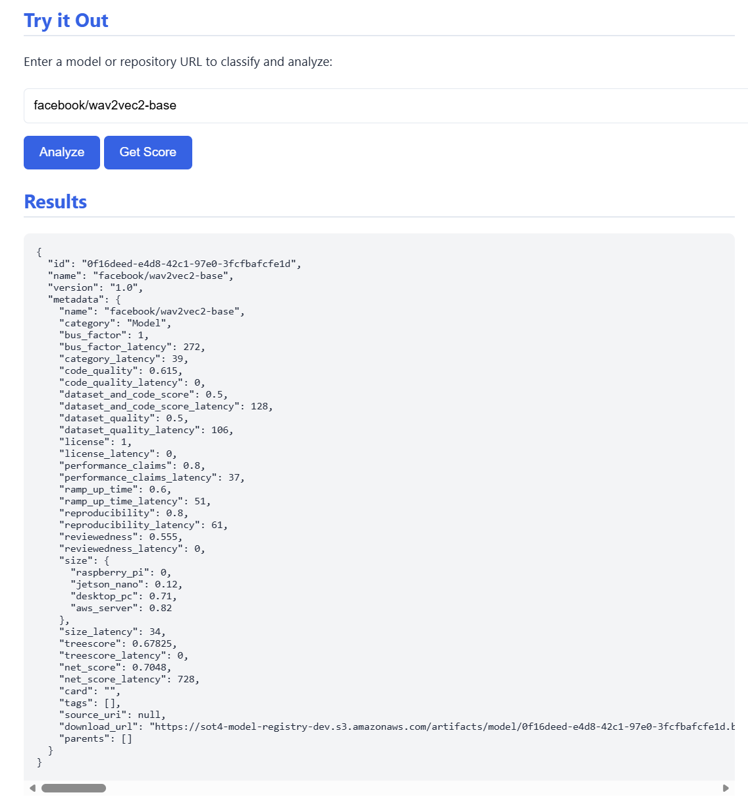
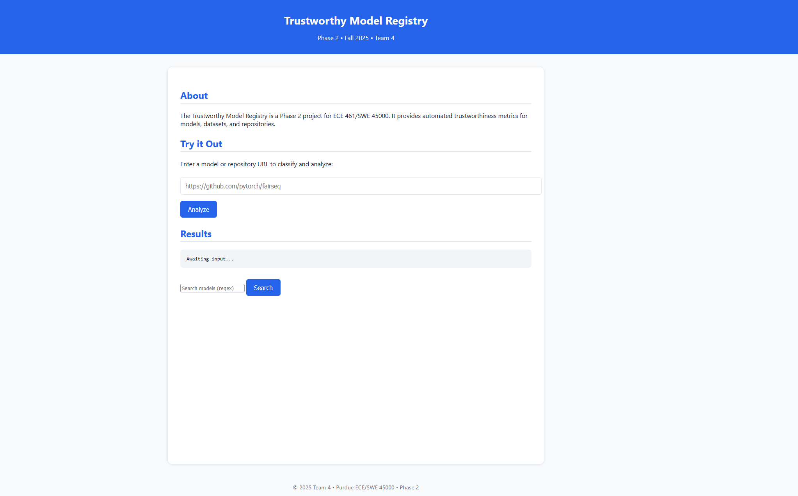

PROJECT / FALL 2025
Hugging Face Model Analyzer
Overview
The Trustworthy Model Registry (TMR) is a cloud-native system for ingesting, evaluating, storing, and serving machine learning artifacts (models, datasets, and code) with explicit, machine-verifiable trust signals. It is designed for enterprise environments that require stronger guarantees than public registries such as npm or HuggingFace alone, including reproducibility, licensing compatibility, lineage transparency, and security-aware ingestion.
The registry exposes a strictly OpenAPI-compliant REST API and a browser-based UI, and is deployed entirely on AWS using free-tier-compatible components. Automated CI/CD, testing, observability, and security analysis are integral parts of the system.
My Role
While there is a lot to this project, we still developed this as a group so there is a lot of overlap with where I helped and what others implemented, and vice versa.
- Helped develop a cloud-based model registry platform that ingests, evaluates, stores, and serves machine learning artifacts through a REST API and web interface.
- Contributed to AWS deployment and infrastructure setup, including Lambda, S3, and CloudWatch, to support hosting, storage, logging, and backend operations.
- Assisted with configuring GitHub Actions and secrets to automate CI/CD workflows for testing and deployment to AWS.
- Supported implementation and validation of core API features such as artifact upload, retrieval, rating, download, search, lineage, license checks, and health monitoring.
Project Images

